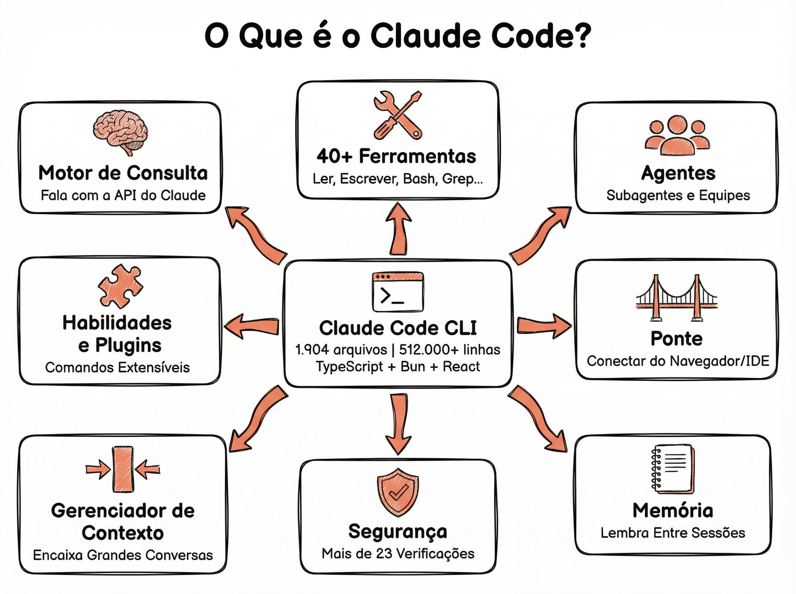

ê°Å¸â¬ Chatbot vs Agente
Um chatbot responde perguntas. Um agente EXECUTA aê§êµes. Essa diferenê§a parece sutil, mas muda tudo. O chatbot termina quando entrega o texto; o agente continua atê© completar a tarefa ê¢â¬â lendo arquivos, escrevendo cê³digo, rodando comandos. O Claude Code nê£o ê© um chatbot sofisticado. êâ° um agente completo: loop contêÂnuo, ferramentas reais e memê³ria persistente.
Chatbot vs Agente ê¢â¬â A Diferenê§a Fundamental
Chatbot: recebe input ê¢â â gera texto ê¢â â fim. Nê£o tem acesso ao mundo real
Agente: recebe input ê¢â â planeja ê¢â â usa ferramentas ê¢â â observa resultado ê¢â â repete atê© completar
Claude Code ê© agente: loop de execuê§ê£o + 40+ ferramentas + 4 tipos de memê³ria
A chave: capacidade de AGIR no mundo, nê£o apenas descrever o que faria
ê°Å¸â¡ Como Identificar um Agente
Faê§a o teste simples: o sistema pode modificar algo no mundo real sem intervenê§ê£o humana? Se sim, ê© um agente. Se ele sê³ gera texto que vocêª precisa copiar e colar manualmente, ê© um chatbot. O Claude Code edita seus arquivos diretamente, roda seus testes e faz commits ê¢â¬â isso ê© agêªncia.
ê°Å¸ââ O Loop Fundamental
Todo agente roda um loop: Input ê¢â â LLM ê¢â â Tools ê¢â â Results ê¢â â Response, repetido quantas vezes forem necessê¡rias. êâ° o while(true) do Claude Code. O agente nê£o sabe de antemê£o quantas iteraê§êµes vai precisar ê¢â¬â ele continua atê© que o LLM decida que terminou (ou atinja um limite de seguranê§a).
O Ciclo do Agente
Input: o usuê¡rio faz um pedido ou o sistema injeta uma tarefa
LLM decide: o modelo analisa o contexto e escolhe quais ferramentas usar (ou nenhuma)
Tools executam: as ferramentas escolhidas rodam e produzem resultados concretos
Loop repete: resultados voltam pro LLM, que decide se precisa de mais aê§êµes ou se pode responder
ê°Å¸âÅ Como o Claude Code Implementa o Loop
queryHaiku/queryLoop: funê§ê£o principal que mantê©m o loop rodando atê© nê£o haver mais tool_calls
Streaming assêÂncrono: resultados chegam em tempo real via async generators
Execuê§ê£o paralela: mêºltiplas tool calls na mesma iteraê§ê£o rodam simultaneamente
Fallback de modelo: se o modelo principal falha, o loop tenta automaticamente um modelo alternativo
ê°Å¸Â§Â° Ferramentas como Superpoderes
Sem ferramentas, um LLM ê© apenas um gerador de texto. Com ferramentas, ele pode ler arquivos, executar cê³digo, buscar na web, criar commits e muito mais. As ferramentas sê£o o que transformam previsê£o de prê³ximo token em aê§ê£o real. O Claude Code tem mais de 40 ferramentas, cada uma dando ao agente uma capacidade especêÂfica.
O Papel das Ferramentas
Interface com o mundo: ferramentas sê£o a ponte entre o raciocêÂnio do LLM e aê§êµes concretas
Definidas como JSON Schema: cada ferramenta tem nome, descriê§ê£o e parê¢metros tipados
LLM escolhe quais usar: o modelo decide sozinho quais ferramentas chamar com quais argumentos
Resultado volta como contexto: a saêÂda da ferramenta ê© adicionada ê conversa para o LLM processar
ê°Å¸â¡ Ferramentas no Claude Code
O Claude Code organiza suas 40+ ferramentas em categorias: leitura (Read, Glob, Grep), escrita (Edit, Write), execuê§ê£o (Bash), navegaê§ê£o (WebFetch, WebSearch) e meta (Agent, TodoWrite). Cada ferramenta tem permissêµes configurê¡veis ê¢â¬â algumas rodam livremente, outras pedem confirmaê§ê£o. Quando vocêª construir seu prê³prio agente, comece com 3-5 ferramentas essenciais e vê¡ adicionando conforme a necessidade.
ê°Å¸Â§Â Estado e Memê³ria
Estado ê© o que o agente sabe agora ê¢â¬â o contexto da conversa atual, os resultados das ferramentas, as decisêµes tomadas. Memê³ria ê© o que persiste entre sessêµes ê¢â¬â configuraê§êµes, preferêªncias, conhecimento acumulado. O Claude Code implementa 4 tipos de memê³ria + o sistema AutoDream para resumo automê¡tico.
Estado vs Memê³ria
Estado (efêªmero): conversa atual, tool results pendentes, decisêµes em andamento ê¢â¬â morre quando a sessê£o fecha
Memê³ria (persistente): CLAUDE.md, configuraê§êµes, preferêªncias aprendidas ê¢â¬â sobrevive entre sessêµes
Context window: o "cê©rebro de curto prazo" ê¢â¬â tudo que cabe na janela de contexto do modelo
AutoDream: quando a context window enche, o Claude Code resume automaticamente para liberar espaê§o
ê°Å¸âÅ Os 4 Tipos de Memê³ria do Claude Code
CLAUDE.md global: ~/.claude/CLAUDE.md ê¢â¬â preferêªncias do usuê¡rio, vê¡lido para todos os projetos
CLAUDE.md de projeto: ./CLAUDE.md ê¢â¬â regras especêÂficas do projeto, commitê¡vel no git
CLAUDE.local.md: memê³ria local nê£o commitê¡vel ê¢â¬â segredos, paths, configs pessoais
TodoWrite: lista de tarefas persistente dentro da sessê£o ê¢â¬â o agente marca progresso conforme avanê§a
ê°Å¸Å½Â¯ Autonomia e Limites
Quanto de liberdade vocêª dê¡ ao agente? Autonomia demais ê© perigoso ê¢â¬â ele pode deletar arquivos, fazer push forê§ado ou gastar tokens desnecessariamente. Autonomia de menos ê© frustrante ê¢â¬â fica pedindo confirmaê§ê£o para tudo. O Claude Code resolve isso com um sistema de permissêµes em 5 camadas.
O Espectro da Autonomia
Allow: ferramentas permitidas sem perguntar ê¢â¬â leitura de arquivos, buscas, operaê§êµes seguras
Ask: pede confirmaê§ê£o antes de executar ê¢â¬â escrita, execuê§ê£o de comandos, operaê§êµes potencialmente destrutivas
Deny: bloqueado completamente ê¢â¬â operaê§êµes proibidas por polêÂtica de seguranê§a
5 camadas: sistema operacional, processo, rede, API e permissêµes do usuê¡rio ê¢â¬â defesa em profundidade
Fazer
- ✓ Configurar permissêµes explêÂcitas para cada ferramenta
- ✓ Usar modo interativo para tarefas sensêÂveis (ask before execute)
- ✓ Rodar em sandbox/container quando testar agentes novos
- ✓ Definir limites de iteraê§ê£o e custo mê¡ximo
Evitar
- ✗ Dar autonomia total sem entender o que o agente pode fazer
- ✗ Desabilitar confirmaê§êµes em operaê§êµes destrutivas
- ✗ Rodar agentes sem limite de iteraê§ê£o em produê§ê£o
- ✗ Confiar cegamente na saêÂda sem revisar aê§êµes crêÂticas
ê°Å¸â Anatomia de um Agente
Todo agente ê© composto pelos mesmos blocos fundamentais: loop de execuê§ê£o, ferramentas, contexto, memê³ria e seguranê§a. No Claude Code, esses blocos se organizam em 8 subsistemas interconectados. Entender essa anatomia ê© o primeiro passo para construir o seu prê³prio agente.

Componentes de um Agente
| Componente | Claude Code | Seu Agente |
|---|---|---|
| Loop | queryHaiku / queryLoop | while True + API call |
| Ferramentas | 40+ tools (Read, Edit, Bash...) | 3-5 tools iniciais |
| Contexto | System prompt + CLAUDE.md | System prompt customizado |
| Memê³ria | 4 tipos + AutoDream | Arquivo de estado |
| Seguranê§a | 5 camadas + allow/deny/ask | Validaê§ê£o de input/output |
| Streaming | Async generators | SSE ou WebSocket |
| Erros | Retry + fallback de modelo | Try/catch + retry |
| Agentes | Standard/Fork/Teammate | Subprocessos |
ê°Å¸ââ¹ Resumo do Mê³dulo
Prê³ximo Mê³dulo:
4.2 - ê°Å¸ââ O Loop do Agente